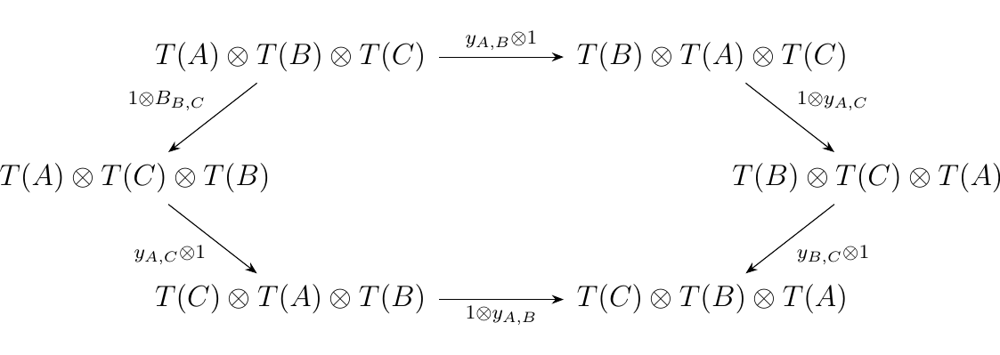
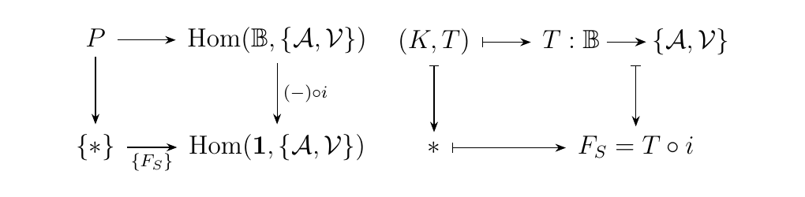
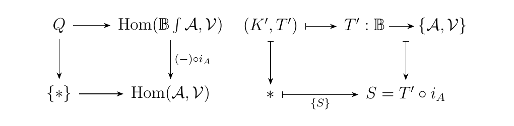
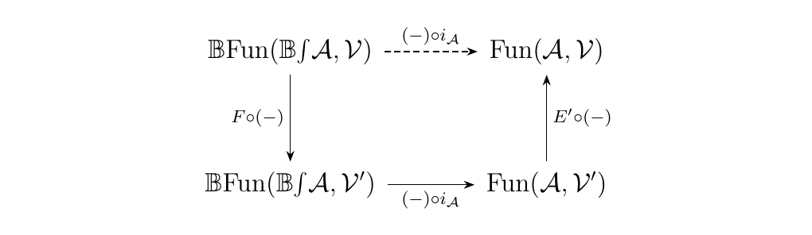
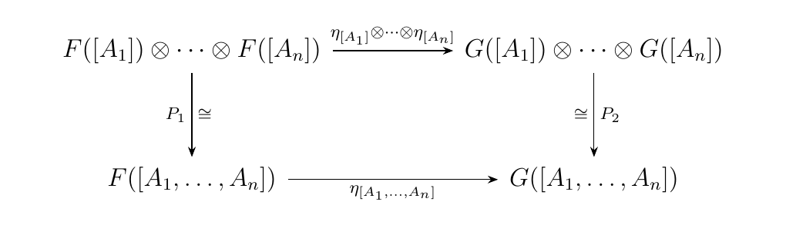

7.6. Coherence for Braided Monoidal Categories
We saw with monoidal categories that ultimately everything we were saying made sense. That is, we saw that our definition does not give us an contradictions, and that we can obtain a significant coherence result which ultimately allows us to not worry about the particular parenthesization of a monoidal product. Further, we saw that diagrams freely built from associators and unitors were all commutative.
With braided monoidal categories we can get a similar statement. This time, however, it is a bit weaker, although it is nevertheless extremely useful. It was Joyal and Street in the 1993 paper who both first proved the coherence for braided monoidal categories. Their work heavily relies on the work of G.M. Kelly, and they use very slick, higher categorical tricks.
In this section, we spell out those tricks.
[Joyal-Street] Let \(\aa\) be a category with \(\vv\) a monoidal category. Suppose \(T: \aa \to \vv\) is a functor. We define a Yang-Baxter operator to be a family of isomorphisms
for each \(A, B \in \aa\) such that the diagram below commutes. such that the diagram below commutes.

Note that here we omit the associators although they are implicitly included in the diagram. Note also that, for any functor \(T: \aa \to \vv\) with \(\vv\) a braided monoidal category, \(T\) trivially has a Yang-Baxter operator \(y\) where we set
Before we move forward we introduce a notion that can be found in \cite{Joyal1993BraidedTC}, originally from \cite{kelly_clubs}. For our purposes, we will denote the category obtained via disjoint unions of the symmetric groups \(S_n\) as \(\mathbb{P}\). That is, the objects of \(\mathbb{P}\) are natural numbers and
Let \(\aa\) be a category and suppose suppose \(\dd \in **Cat**/\mathbb{P}\). That is, \(\dd\) is a category with an associated functor \(\Gamma: \dd \to \mathbb{P}\). Then we define the category \(\dd\int\aa\) where
- Objects. Finite strings \([A_1, A_2, \dots, A_n]\) with \(A_i \in \aa\)
- Morphisms. For two strings \([A_1, \dots, A_n]\) and \([B_1, \dots, B_n]\), denoted as \([A_i]\) and \([B_i]\),
Here \(\alpha\) is a morphism of \(\dd\) such that \(\Gamma(\alpha) = \sigma \in S_n\). Finally, we allow no morphisms between two different strings of different length.
For any category \(\aa\), there exists a natural inclusion functor
where \(e_1\) is the sole element of \(S_1\). This functor will be useful for us later. Next we formalize the following category which can be thought of as a generalized functor category.
Let \(\aa, \bb\) be categories. Denote the category \(\{\aa, \bb\}\) as the category with objects \((n, F: \aa^n \to \bb)\) whose morphisms are
Here \(\sigma \in S_n\), and \(\eta: \sigma \cdot T \to S\) is a natural transformation from the functor \(\sigma \cdot T\) defined pointwise as
to the functor \(S\).
There are two things we need to say about this category. First, for any generalized functor category \(\{\aa, \vv\}\), there exists a a projection functor \(\Gamma: \{\aa, \bb\} \to \mathbb{P}\) defined on objects and morphisms as
Hence we see that each category \(\{\aa, \bb\}\) is actually a member of \(**Cat**/\mathbb{P}\), because it always comes equipped with a functor into \(\mathbb{P}\).
Second, if \(\vv\) is a strict monoidal category, then so is \(\{\aa, \vv\}\). One can see this by defining for two functors \(T: \aa^n \to \vv\) and \(S: \aa^m \to \vv\) the functor \(T \otimes S: \aa^{n+m} \to \vv\) which is a functor that can be defined pointwise as
Thus if \(\vv\) is strict, then so it \(\{\aa, \vv\}\).
What is useful about this construction is that Kelly showed that the functors
form an adjunction. We use this in the next proposition, which is also aided by the following lemma.
Let \(\vv\) be a strict monoidal category. Suppose \(T: **1** \to \vv\) has a Yang-Baxter operator \(y\). Then there exists a unique strict monoidal functor \(T': \mathbb{B} \to \vv\) such that the diagram below commutes.
Further, we have that \(T'(\sigma) = y\).
\begin{proof} Denote the element of \(\mathbf{1}\) as \(\bullet\). Then \(T(\bullet) = X\) for some \(X \in \vv\). Towards a definition of \(T'\), let \(T': \mathbb{B} \to \vv\) be defined on objects as \(T'(1) = X\). If we force \(T'\) to be strict, this will define its value on all objects of \(\mathbb{B}\). On morphisms, first observe that each \(\beta \in B_n\) can be expressed in terms of its generators \(\sigma_i\). Hence it suffices to define the action of \(T'\) on a generator \(\sigma_i\), and we do this naturally as:
We then define \(T'(\beta)\) as the iterative composite over the generators. We are then left to check that the relations of \(\mathbb{B}\) are preserved (which they are). This then allows us to define \(T': \mathbb{B} \to \vv\) to be a unique, well defined strict monoidal functor which allows the diagram to commute. \end{proof}
Let \(\vv\) be a strict monoidal category, and suppose we have a functor \(T: \aa \to \vv\) with associated Yang-Baxter operator \(y\). Let \(z\) be the Yang-Baxter operator on \(i_{\aa}: \aa \to \mathbb{B}\int\aa\). Then there exists a unique strict monoidal functor \(T': \mathbb{B}\int\aa \to \vv\) such that the diagram
commutes and that \(T'(y') = y\).
\begin{proof} Recall that \(\{\aa, \vv\}\) is a strict monoidal category if \(\vv\) is. Consider again the one point category \(\mathbf{1}\) and construct functors \(F_S: \mathbf{1} \to \{\aa, \vv\}\) and \(j: \mathbf{1} \to \mathbb{B}\) where \(F_T(\bullet) = T: \aa \to \vv\) and \(i(\bullet) = 1\). Then by the previous work, there exists a map \(T^{\#}: \mathbb{B} \to \{\aa, \vv\}\) such that the diagram below commutes.
Now construct the maps \(\{F_S\}: \{*\} \to \hom(\mathbf{1}, \{\aa, \vv\})\) and \(\{S\}: \{*\} \to \hom (\aa, \vv)\) where \(\{F_S\}(*) = F_S\) and \(\{S\}(*) = S\). Consider the pullback squares below.

 First, \(P\) corresponds to the set of functors \(T: \mathbb{B} \to \{\aa, \vv\}\) such that precomposition with \(i\) is equal to \(F\). Meanwhile, the set \(Q\) consists of functors \(T': \mathbb{B}\int\aa \to \vv\) where precomposition with \(i_{\aa}\) is equal to \(S\). However, these sets are in bijection due to the adjoint relation we have. In other words, the diagrams
are in bijection. Hence we see that \(T^{\#}\) corresponds uniquely with a functor \(T'\) such that the diagram
 commutes and preserves the Yang-Baxter operators as desired.
\end{proof}
commutes and preserves the Yang-Baxter operators as desired.
\end{proof}
Let \(\vv\) be an \(B\)-category and suppose we have a functor \(F: \aa \to \vv\). Then there is an equivalence of categories
given by precomposition of each \(F: \mathbb{B}\int\aa \to \vv\) with \(i_{\aa}: \aa \to \mathbb{B}\int\aa\).
\begin{proof} We follow the same argument as Joyal and Street. By the previous lemma, every \(SB\)-monoidal category is strongly equivalent to a strict \(SB\)-monoidal category \(\vv'\) via a pair of functors \(E: \vv \to \vv'\) and \(E': \vv' \to \vv\). Hence observe that if we have an equivalence of categories \((-) \circ i_{\aa}: \mathbb{B}\fun(\mathbb{B}\int\aa, \vv') \to \fun(\aa, \vv')\), then the diagram below commutes
 and the top dashed arrow is an equivalence as well. So it suffices to prove this for the strict case. Now, the proposed functor \(F\) behaves as
We must demonstrate that this is fully faithful and essentially surjective.
- Fully faithful. Let \(F, G: \mathbb{B}\int\aa \to \vv\) be strong \(SB\)-monoidal functors. Then define the function
where, given a natural transformation \(\eta: F \to G\), we have that \(\phi(\eta): F\circ i_{\aa} \to G \circ i_{\aa}\) is a natural transformation defined as
We show that this is injective. Suppose \(\phi(\eta) = \phi(\eta')\) for two natural transformations \(\eta, \eta': F \to G\) with \(F, G \in \mathbb{B}\text{Fun}(\mathbb{B}\int\aa, \vv)\). The fact that \(\phi(\eta) = \phi(\eta')\) implies that
As these are natural transformations between monoidal functors, we have that the diagram below commutes.
 The morphisms \(P_1\) and \(P_2\) are the isomorphisms built inductively from
which comes equipped with the data of a strong monoidal functor [see Mac Lane, p. 256]. Moreover, the diagram commutes by Mac Lane's coherence theorem.
The above diagram similarly holds with \(\eta\) replaced as \(\eta'\), since \(\eta'\) is also a natural transformation of monoidal functors. Hence what we see is that
As \(P_1\) is an isomorphism, we have that \(\eta_{[A_1, \dots, A_n]} = \eta'_{[A_1, \dots, A_n]}\), so that \(\phi(\eta) = \phi(\eta')\) implies that \(\eta = \eta'\). Hence the functor is faithful. The functor is clearly full, since by the above process we can always take a natural transformation \(\eta: F\circ i_{\aa} \to G\circ i_{\aa}\) and build it into a natural transformation \(\eta: F \to G\). * Essentially Surjective. Consider a functor \(F: \aa \to \vv\). By Proposition \ref{proposition:triangle_commutes}, we know there exists a unique \(S: \mathbb{B}\int\aa \to \vv\) such that \(S \circ i_{\aa} = F\). Hence we have essential surjectivity; in fact, we have a stronger version in the strict case.
\end{proof}